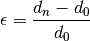
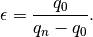

Welcome to edi12’s documentation!¶
The edi12 package provides a simple means to handle Energy Dispersive X-ray Diffraction (EDXD) data from the Diamond Light Source’s I12 (EH2) beamline. The package’s core functionality is to take raw NeXus data files and output enhanced files which include detector specific strain.
Strain Calculation¶
Strain is calculated from each specified peak individually (i.e. this is not a Reitveld type refinement) although the strain from many individual peaks may be calculated and stored.
Strain is calculated against the unstrained inter-planar spacing,  , such that:
, such that:

or, more specifically, in terms of the scattering vector, q:

The unstrained lattice parameter () much either be explicity given or specified via a NeXus file containing EDXD measurements from an unstrained source.
A consideration of the methods by which to extract unstrained lattice parameters can be found in work by Withers et al. (REF).
Full Strain State¶
The detector, and therefore angle, specific strain values can be further utilised to fit and extract a full represenation of the in-plane strain state. This is beneficial due to the additional information that is then available, notably the principal in-plane strains and shear strain. Further to this, these parameters then allow for the extraction/calculation of strain at any defined angle. This can be more accurate than the equivalent detector specific strain due to the additional information that is effectively leveraged in the calculations.
Plotting¶
In addition to the the extraction and manipulation of strain data, the edi12 package also provides some plotting functions to allow for the visulisation of the strain data.
Contents: